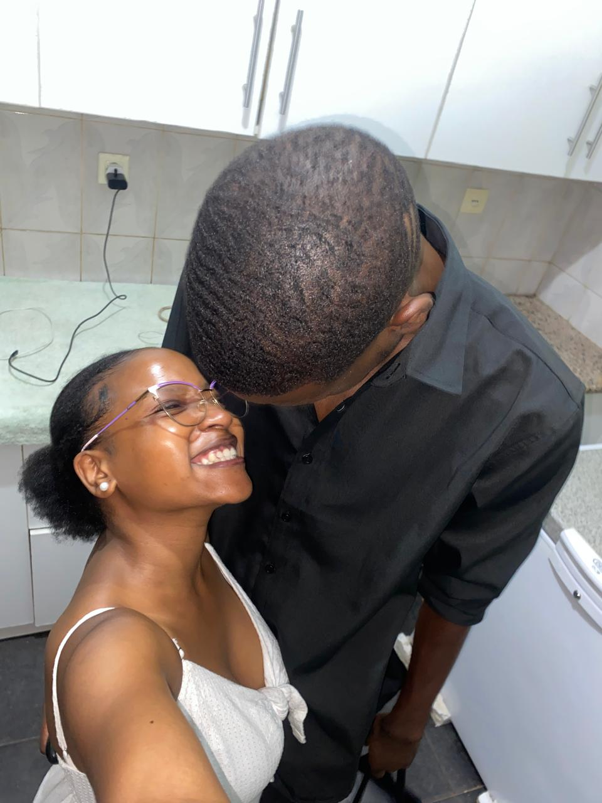

29.04.2025
O nosso começo
O dia que ficou marcado como o início oficial desta história e de tudo o que veio depois.
UM PEQUENO LUGAR SÓ NOSSO
Há histórias que cabem numa fotografia. A nossa precisou de um site inteiro.

29 • 04 • 2025
Dois caminhos, uma história — e ainda tantos capítulos por viver.
Anselmo Ralph feat. Sandokan — Minha Bebé
DESDE 29 DE ABRIL DE 2025
E cada segundo acrescenta mais uma linha à nossa história. ❤️
CAPÍTULO 01
Desde 29 de abril de 2025, esta deixou de ser apenas a história de duas pessoas. Passou a ser um caminho construído a dois — com risadas, saudades, desafios, carinho e aqueles pequenos detalhes que só nós entendemos.
Este site é um lugar para guardar tudo isso. E, principalmente, para lembrar que ainda há muito por viver.
A NOSSA LINHA DO TEMPO
O dia que ficou marcado como o início oficial desta história e de tudo o que veio depois.
Conversas, encontros, gargalhadas, selfies, beijos, saídas e pequenos momentos que foram tornando tudo mais nosso.
Sem saber tudo o que vem a seguir — mas com vontade de continuar a escrever juntos.
Esta parte fica em branco de propósito. É para nós preenchermos juntos.
NOSSOS MOMENTOS
Adicionei as vossas fotografias favoritas para a galeria ficar ainda mais vossa.
COISAS QUE TALVEZ EU NEM DIGA SEMPRE
PARA TELMA BALOI
Não cabe numa fotografia. Nem num contador. Então deixei aqui, só para ti.